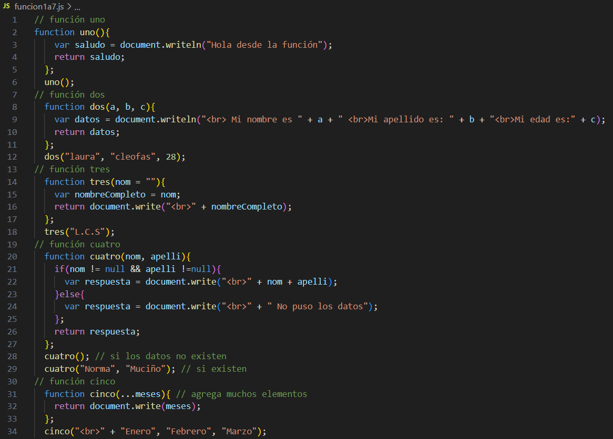
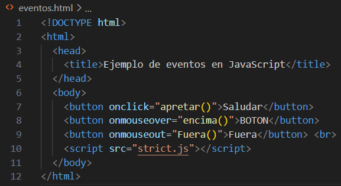

Funciones

A continuación se muestra el resultado
En esta practica se establecen datos en el "JavaScripr" y luego en el HTML se vean impresos los datos
que estan en el "JS" y en el "HTML"
En el siguiente link podra ver la practica:
use strict
En esta practica se utilizan los botones dependiendo de donde se ubique el puntero mostrara un mensaje distinto
A continuación se muestra el resultado de manera grafica
En el siguiente link podra ver la practica:
Metodfun
En esta practica se muestran 2 cantidades impresas
A continuación se muestra el resultado de manera grafica
En el siguiente link podra ver la practica:
Clases atributos métodos

A continuación se muestra el resultado de manera grafica
En el siguiente link podra ver la practica:
Herencia
A continuación se muestra el resultado de manera grafica
En el siguiente link podra ver la practica:
Arreglos
A continuación se muestra el resultado de manera grafica:
En el siguiente link podra ver la practica:
Gráficas con Chart.js y Plotly.js
A continuación se muestra el resultado de manera grafica
En el siguiente link podra ver la practica:
Video
En esta practica se realiza una grabación de video
A continuación se muestra el resultado de manera grafica
En el siguiente link podra ver la practica:
Canvas
En esta practica se realizan diferentes figuras utilizando la etiqueta "CANVAS"
A continuación se muestra el resultado de manera grafica
En el siguiente link podra ver la practica:
EXAMENES (Lavado)
Examen YAIR
Texto
Examen ALEXIS
Texto
Examen JESUS
Texto
Examen SAUL
Texto
--Conclusion--
Introducción al lenguaje:
Proporciona una visión general de los conceptos básicos del lenguaje, su sintaxis y características principales.
Manejo de Frameworks:
Abarca el manejo de frameworks en el contexto específico, incluyendo cómo utilizarlos, sus características y beneficios.
Estructuras de Control:
Instrucciones utilizadas para controlar el flujo de ejecución de un programa, como sentencias if-else y bucles.
Manipulación de objetos:
Cómo manipular objetos, acceder a sus propiedades, invocar sus métodos y utilizarlos para realizar tareas.
Programación del lado del servidor:
Programación en el servidor para procesar solicitudes y generar respuestas al cliente.
Tratamiento de Formularios:
Captura y procesamiento de datos ingresados por el usuario a través de formularios web.
Manejo de objetos del servidor:
Trabajo con objetos y bibliotecas del servidor para desarrollar aplicaciones web.
Creación de clases:
Cómo crear clases, definir propiedades, métodos y utilizar herencia.
Acceso a datos:
Acceso y manipulación de datos almacenados en bases de datos u otros recursos.
WordPress:
Sistema de gestión de contenido utilizado para crear y administrar sitios web.
Conexiones a bases de datos:
Establecimiento de conexiones con bases de datos para almacenar y recuperar datos.